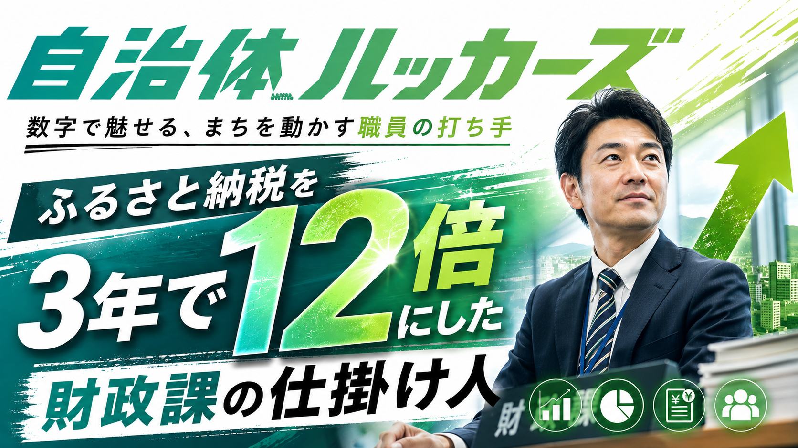
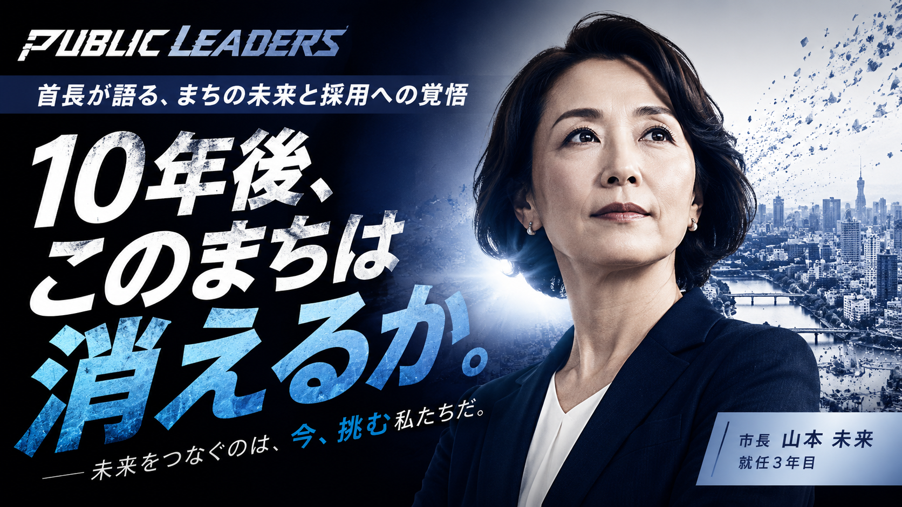
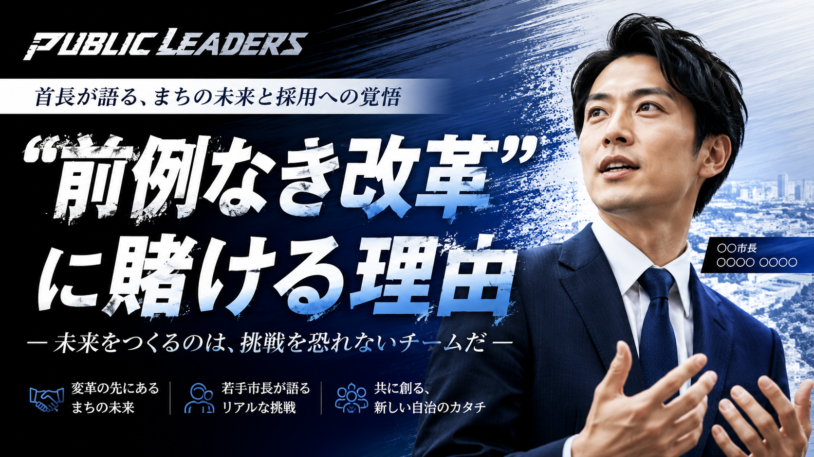
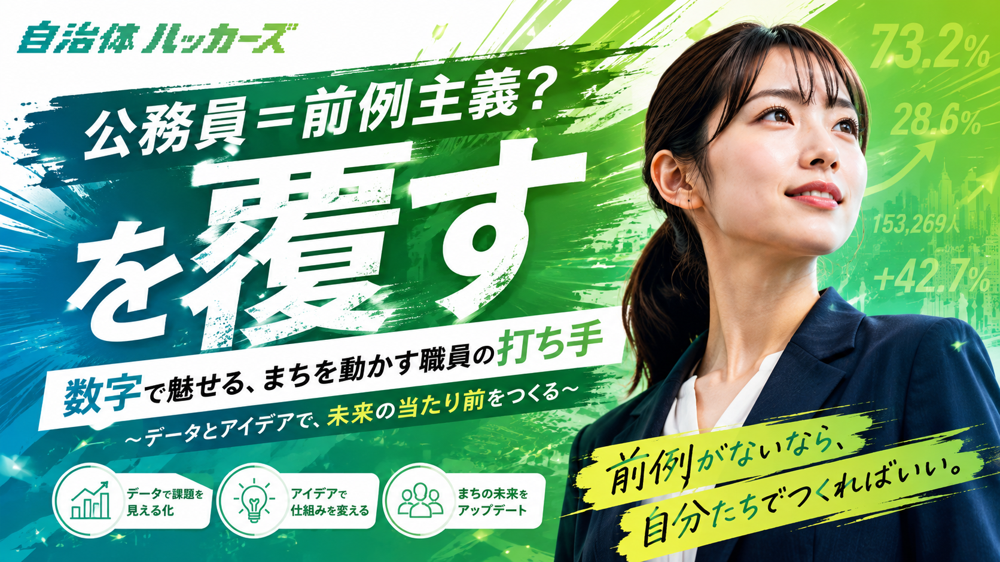
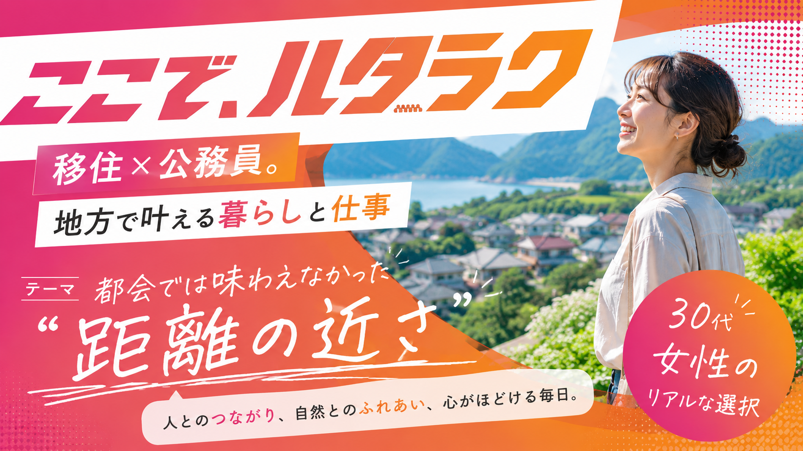
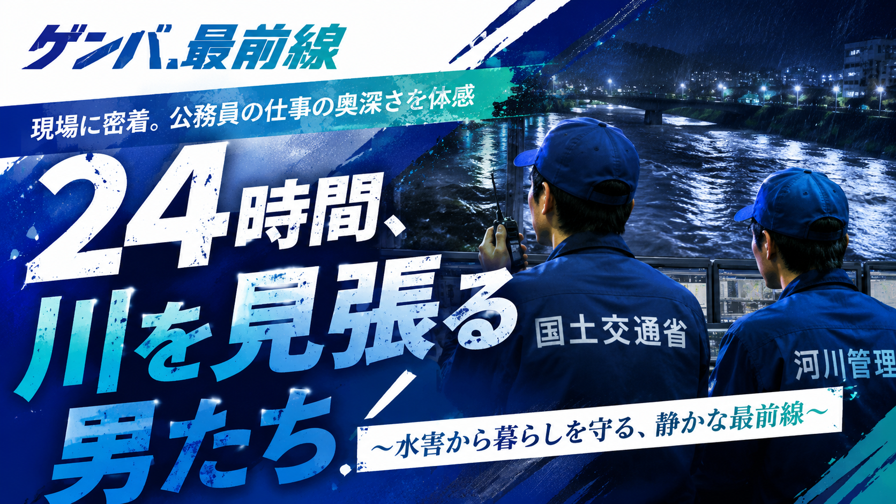
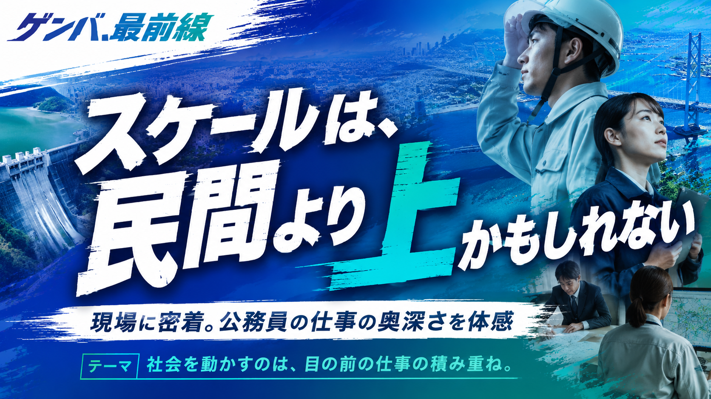
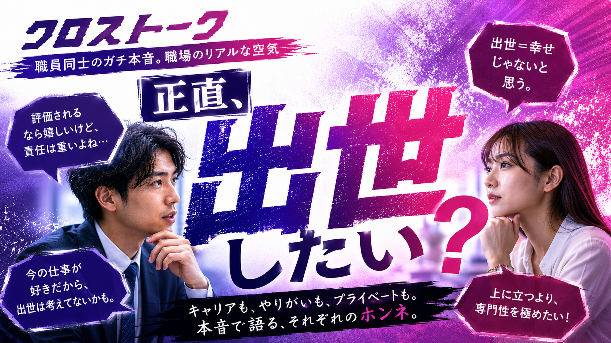
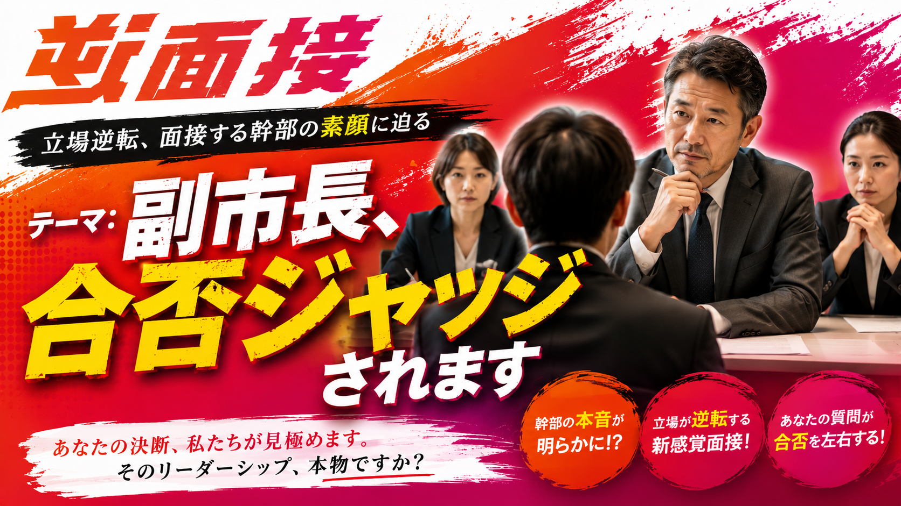
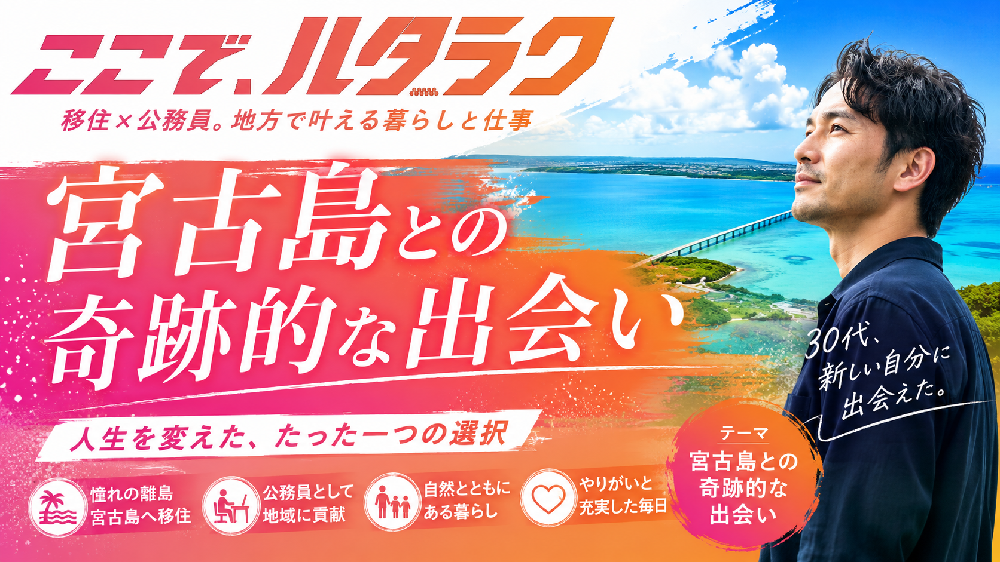

12:30
ふるさと納税を3年で12倍にした財政課の仕掛け人 ── 数字で魅せる、まちを動かす職員の打ち手

15:48
10年後、このまちは消えるか。── 首長が語る、まちの未来と採用への覚悟

13:20
“前例なき改革”に賭ける理由 ── 未来をつくるのは、挑戦を恐れないチームだ

09:15
公務員＝前例主義？を覆す ── データとアイデアで、未来の当たり前をつくる

08:40
移住×公務員、地方で叶える“距離の近さ” ── 30代女性のリアルな選択

11:05
24時間、川を見張る男たち ── 水害から暮らしを守る、静かな最前線

10:30
スケールは、民間より上かもしれない ── 公務員の仕事の奥深さを体感

14:10
正直、出世したい？── キャリアも、やりがいも、本音で語るそれぞれのホンネ

16:25
逆面接｜副市長、合否ジャッジされます ── 立場逆転、面接する幹部の素顔に迫る

09:50
宮古島との奇跡的な出会い ── 人生を変えた、たった一つの選択